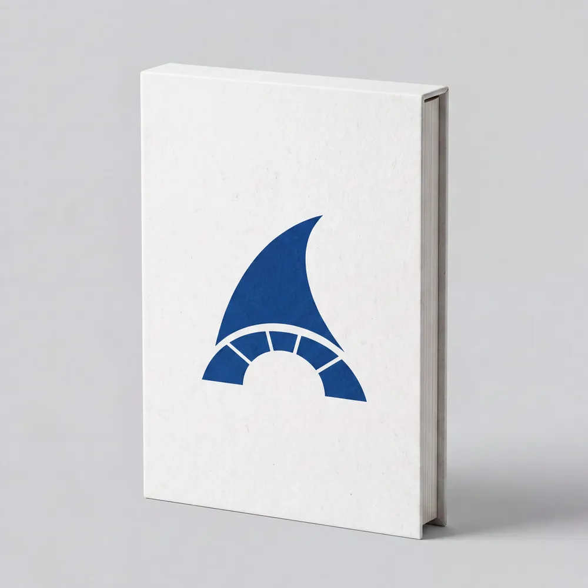

Edición en preparación · Preventa aberta
Cadernos de Identidade Baionesa
PORTA: un libro sobre a historia e a memoria de Baiona
Un espazo de resistencia matérica.
O volume fundacional de PORTA é unha colección monográfica independente concibida baixo os ritmos da corrente Slow Media.
Un libro bilingüe, en galego e español, concibido como arquivo permanente para explorar a lume lento a historia, a mitoloxía e a memoria arquitectónica da Real Vila de Baiona. Impreso con rigor editorial para habitar a contemplación.

A edición
Un volume de 120 páxinas, impreso en papel FSC de acabado mate e encadernado en tapa dura con slipcase. Edítase en galego e español, a dobre columna, coidando que o texto respire. Primeira edición, Baiona, con publicación prevista para decembro de 2026; actualmente en preparación.
Algunhas páxinas do volume
Sobre a autora
Aldara Álvarez González
Edición, Curadoría e Dirección de Arte
Deseñadora editorial e curadora visual. O seu traballo inscríbese dentro da corrente do Deseño Total, unha metodoloxía onde a investigación historiográfica, a redacción, a ilustración e a arquitectura tipográfica converxen baixo unha única visión de autor.
Con PORTA, Aldara propón un manifesto contra a inmediatez dixital. O proxecto nace da necesidade imperiosa de documentar a herdanza inmaterial e pétrea da súa terra, Baiona, afastándose dos ritmos de consumo turístico masivo para abrazar a contemplación.
"Nomear o territorio coas palabras que o esculpiron é o primeiro acto de soberanía cultural."
Reservar PORTA
O Volume Fundacional é unha tirada limitada de carácter independente. Apoia este proxecto editorial reservando o teu exemplar físico.
A edición segue en preparación e aínda non existen exemplares físicos; a publicación está prevista para decembro de 2026. Por agora abrimos unha preventa: reservar non supón ningún pagamento, só anotamos o teu exemplar para avisarte cando estea listo.
Puntos de Venda Físicos (cando a edición estea publicada)
- ✦ Libraría Época, Baiona
- ✦ Espazo de Arte A Erizana, Baiona